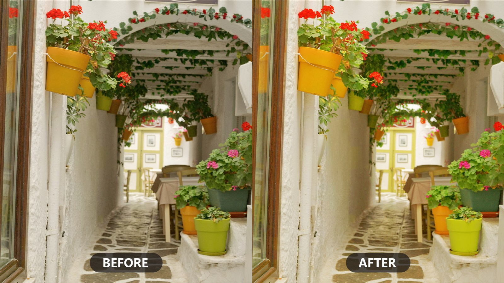
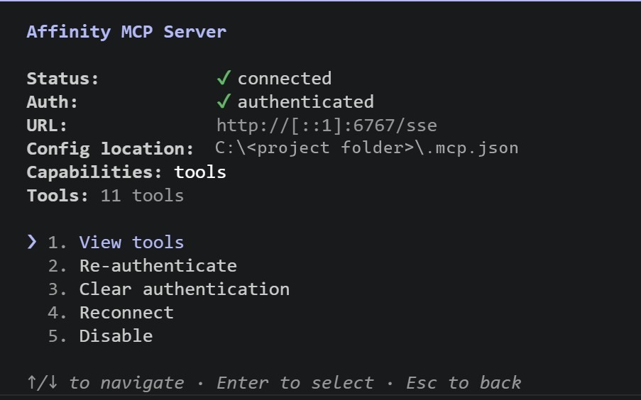
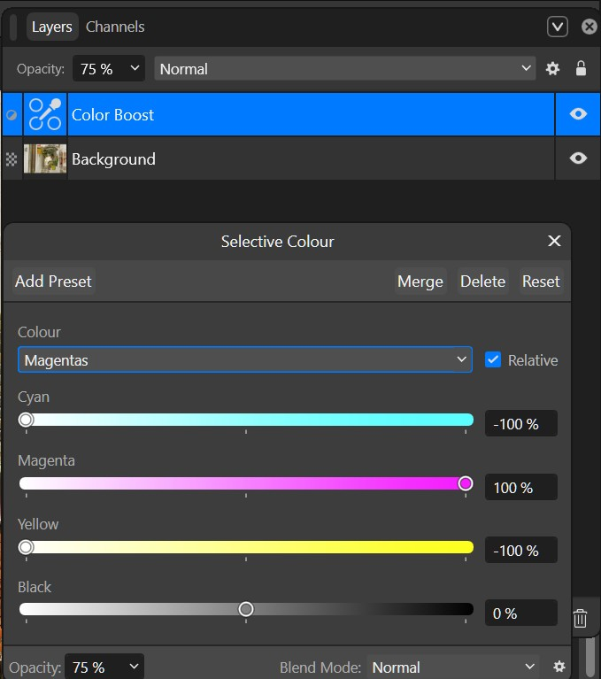
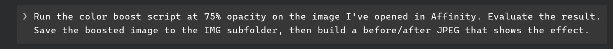

Affinity · Claude Code · Windows | −C +M +Y
Affinity 3.2 ships a built-in MCP server, and the official guide pairs it with Claude Desktop. That route works — the Claude Desktop notes at the bottom of this page cover it. This guide takes the other door: Claude Code in VS Code (or a plain terminal), where your project lives in a folder that Claude reads by itself.
And it isn't complicated. Once a folder on your Desktop holds a few small text files, the rest is: open the folder → check the connection → run the script. All in all, about ten minutes to your first AI-written adjustment layer.
Not a Claude user? Affinity's server is open to any AI that speaks MCP — Codex,
Antigravity, OpenCode. You don't have to follow a guide for those: point your own agent at
the
repo's SETUP.md and it will set the connection up itself.
The short version is further down.

One Selective Colour layer — written, applied, and tuned by Claude, shown here at 75% opacity.
Checklist
In Affinity
In Affinity, open Edit ▸ Settings ▸ Model Context Protocol and enable Enable Affinity MCP. That's the whole server-side setup — Affinity now listens for a client on port 6767. Leave Affinity running and open your favorite photo.
On your Desktop
A project is just a folder on your Desktop holding a few small text files — the connection, Claude's briefing, the script. This is the shape you're after:
what you get
affinity-photo-claude-code-windows/ ├── .mcp.json ← the connection — ready to use, don't edit ├── CLAUDE.md ← Claude's briefing, read at every session start ├── examples/ ← color-boost.js lives here ├── docs/ ← SDK field notes from real sessions └── verify.ps1 ← connection checker, for when things won't connect
The quickest route is git: clone the companion repo straight onto your Desktop and that exact folder appears — connection file, Color Boost script, Claude's briefing, and a diagnostic tool, all included:
terminal
> cd ~\Desktop > git clone https://github.com/bolloplayer/affinity-photo-claude-code-windows.git
A project is just a folder with three small text files — Notepad is enough. Create a folder on your
Desktop (say, my-affinity-project) and add:
1 · The connection — a file named .mcp.json with exactly this content
(keep the URL as written):
{
"mcpServers": {
"affinity": {
"type": "sse",
"url": "http://[::1]:6767/sse"
}
}
}2 · Claude's briefing — a file named CLAUDE.md, read automatically at the start of
every session. Three lines are enough to begin; it grows with your project:
# My Affinity project - Affinity's MCP server is configured in .mcp.json — never change the URL to localhost. - Read the Affinity SDK "preamble" doc once per session, before running any script. - Scripts and exports live in this folder. Start with color-boost.js.
3 · The script — download color-boost.js (right-click → Save link as…) and put it in the folder.
Desktop? Affinity insistsAffinity sandboxes its scripts: they can read and write files only on the Windows Desktop.
The MCP connection itself works from
any folder — but the moment a script exports something, a render, a batch result, the before/after images in
this guide, the file can only land on the Desktop. Keep the project at
C:\Users\<you>\Desktop\… and exports drop straight into your own folder tree instead of
scattering loose on the Desktop.
In VS Code
Install VS Code (free) if you don't have it, and add the Claude Code extension: Extensions panel → search Claude Code (publisher Anthropic) → Install. Then, with Affinity already running: File ▸ Open Folder… → pick your project folder → open a Claude Code chat, and approve the affinity server when it asks.
Type /mcp — you should see the affinity server connected, with tools like execute_script and render_spread. That's the whole setup: from here on you just talk.
Prefer a plain terminal? Same thing: cd into the folder, run claude, type /mcp.

Not connecting? The troubleshooting table at the bottom of this page covers the usual causes. (If you cloned the companion repo, it also includes verify.ps1, which checks each link in the chain — Affinity process, port listening, handshake — and tells you which one is broken.)
The payoff
Open a photo in Affinity. In Claude Code, ask:
prompt
> Read the SDK preamble, then run color-boost.js on the
open document and render the result.Claude reads Affinity's own SDK documentation over the connection, executes the script, and renders the spread back to itself to confirm it worked. In Affinity you'll see one new adjustment layer appear: Color Boost — a Selective Colour layer that enriches all six colour ranges with classic CMY complement logic while leaving whites, greys, and blacks untouched. It's an ordinary layer: undoable, deletable, yours.

Drag the handle to compare. On the right: the Color Boost layer as Affinity shows it.
Iterate
The layer's opacity is the master strength control. The script defaults to a subtle 25%; the hero image up top is the same layer at 75%. Drag it in Affinity, or just say so: "set the Color Boost layer to 60% and render it." Re-running the script replaces its own layer, so you can iterate without stacking duplicates.
Better yet, chain the whole workflow into one request. This is a real prompt from the session that built this page — and everything after it happened in one go:

Claude re-ran the script at 75%, rendered the spread and judged the result (flagging that the geranium reds were nearing saturation clipping), exported the full-resolution image into IMG/, exported a "before" frame, and composited the labeled before/after JPEG with PowerShell — script, evaluation, files, and folder in a single instruction. That's the part no chat app can follow you into.
And that's the real point. Color Boost is one small script — but the loop you just ran is general. Describe any look — a warm matte film grade, a punchy product-shot cleanup, a batch watermark — and Claude writes the script, applies it, looks at the render, and refines it. Keep the good ones in your repo. They run forever, with or without Claude.
Troubleshooting
| Symptom | Cause | Fix |
|---|---|---|
| Affinity tools missing, but everything checks green | SSE connection detached (e.g. a resumed chat) | /mcp → reconnect affinity. Try this first. |
| Tools missing at startup | Affinity wasn't running when Claude Code started | Open Affinity, restart Claude Code |
| Tools connect but hang | Affinity restarted after Claude Code connected — stale session | /mcp → reconnect, or restart Claude Code |
ECONNREFUSED [::1]:6767 |
Affinity not running, or the MCP toggle is off | Restart Affinity, re-check the setting from step 1 |
Any other AI
Nothing above is Claude-specific on Affinity's side. The app exposes one ordinary MCP server, and any harness that speaks the protocol can drive it. What changes between them is a single config file — and a few traps that look like bugs but aren't.
the endpoint, always
http://[::1]:6767/sse
| Your AI | Config file | Transport |
|---|---|---|
| Claude Code — VS Code, terminal, Desktop Code tab | .mcp.json in the project folder |
SSE, native — this guide |
| Codex — CLI or the ChatGPT app's Codex tab | ~/.codex/config.toml, pointing at the repo's bridge |
stdio bridge → SSE |
Antigravity (agy) — Gemini |
.agents/mcp_config.json — the field is serverUrl, not url |
SSE, native |
| OpenCode — any model you like | opencode mcp add affinity --url … |
SSE, native |
Three things that look broken and aren't. It has to be [::1] — Affinity binds an IPv6
loopback socket, so 127.0.0.1 refusing the connection is expected. It's SSE only;
there is no Streamable HTTP endpoint to find. And Affinity accepts MCP protocol 2025-11-25
alone, which is the one and only reason Codex needs a bridge.
The repo carries a setup sheet written for an agent rather than a person. Open Affinity, switch on the server as in step 1, then paste this to whichever AI you use:
Set up a connection to Affinity Photo's MCP server on Windows. Follow github.com/bolloplayer/affinity-photo-claude-code-windows — read its SETUP.md and do what it says for the harness you're running in, including the verification at the end. If you get stuck, tell me where the doc stopped matching what you found.
It writes the config, fetches the scripts it needs, and asks you to restart once. After that it proves the connection without touching anything of yours, then offers you a short menu: leave it there, run the two-layer Color Boost on your open photo and see the before/after, write a look of your own, or make the connection machine-wide so you never set it up again.
Partway through, your AI will stop and ask you to restart it. That's supposed to happen, and it catches everyone the first time.
Every one of these tools reads its MCP configuration once, at startup. Your AI has just
written that configuration — so the connection cannot exist in the session that created it. There's no
command that loads it live, in any of them. /mcp won't do it either: it reconnects servers
that are already registered, and this one isn't yet.
Quit, start it again in the same folder, approve the affinity server if you're asked, and say "continue". Your AI leaves itself a note before it stops, so the new session knows exactly where it was and goes straight on to the before/after.
And it's once. With Claude Code the server is registered for your whole machine, so every project you open afterwards has Affinity from its first message.
They all get the architecture right and the API calls wrong — the Affinity SDK is too new to be well represented in training data, so expect simple scripts first try and a review pass on complex ones. The repo's model and harness comparison lays out what's actually been verified, what's assumed, and what each option costs. One result worth knowing up front: DeepSeek Flash produced cleaner SDK code than its more expensive Pro sibling, at a fraction of the price — and Claude Code can be pointed straight at it without changing a single config file.
OG: Claude Desktop
Open Claude Desktop and you'll find two tabs.
The Home tab is the chat: it talks to Affinity through the official connector, and it handles the
scripting loop well. Open a session, tell it to connect to the Affinity server, then connect a folder to the
session. Now begin crafting your image: add adjustments, make scripts, save results into your folder — and
keep a notes.md of your findings and progress for the next session.
The Code tab is Claude Code — the same agent this guide runs in VS Code. Inside the Desktop app it
inherits the Affinity connector: instruct it once to "connect to the Affinity server", pick the
Affinity Connector in the dialog, and it works without any .mcp.json (verified, even from an
empty folder).
| Home tab (chat) | Claude Code | |
|---|---|---|
| Your project folder | Connect it to the chat — it persists on disk and reconnects in new sessions | Opens the folder and works inside it |
Project notes (CLAUDE.md) |
Must instruct it to read your notes — nothing loads by itself | Read automatically, every session |
| Shell, git, batch tools | Isolated Linux sandbox — git, Node, Python, but not your Windows PowerShell; git can be fragile across the folder mount | Your real machine: PowerShell, git, any CLI you have |
| Browsing your files | No file tree — ask Claude to list the folder | Your own tools: Explorer, editor, terminal |
That changes how sessions feel. A chat starts blank every time; a folder remembers. New session, and Claude already knows your goals from CLAUDE.md, finds last week's scripts, and picks up where you stopped. And because it has your shell, the work doesn't end at Affinity's edge — the before/after image at the top of this page was exported from Affinity by script, composited by PowerShell, and committed to git, in one request.